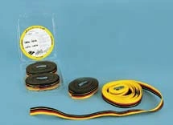

Nautica e hobbistica
Traini TS1
Traini presentati nella linea nautica e hobbistica.
- Articolo
- TS1 / 2.500 / 5.000
Prima di scegliere.
Dati trascritti dal catalogo originale. Portate, misure, configurazioni e riferimenti normativi vanno confermati nella documentazione del prodotto fornito; i valori non costituiscono istruzioni di impiego.
Da verificare
La fonte non specifica misure e caratteristiche complete; richiedere conferma.